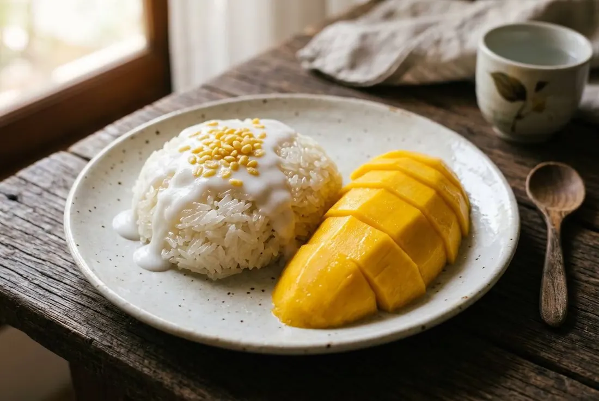

Steamed glutinous rice folded hot with salted coconut cream, ripe mango, salted cream sauce, fried mung beans. The salt is the dish.

In April 2022, the Thai rapper MILLI ate mango sticky rice on the Coachella main stage — and Thailand's vendors had to double their stock overnight. The dish didn't need the publicity, though: Bangkok's K. Panich has sold it for 90 years, and the coconut-folding tradition behind it goes back to King Rama II's era. A palace record from King Rama V's court pairs the same coconut rice with ripe อกร่อง mango.
Chef Chumpol of R-HAAN (2 Michelin stars) sets the standard: the rice "should not be too sticky, not soggy, not hard — soft with a slight bite," carrying a sweet-salty balance; the mango sweet and fragrant with a faint sour finish, "not sour-lead." Everything else is a negotiation.
| Thai | English | Amount |
|---|---|---|
| ข้าวเหนียวเขี้ยวงู | Glutinous rice (kiew ngู variety) | 500 g |
| หัวกะทิสด | Fresh coconut cream — for the rice | 300 g |
| น้ำตาลทรายขาว | White sugar | 220 g |
| เกลือ | Salt | 12 g |
| ใบเตย (มัด) | Pandan leaves, knotted | 2 |
| มะม่วงสุก | Ripe mangoes — น้ำดอกไม้ or อกร่อง | 2 |
| ถั่วทองทอด | Fried mung beans, to top | 20 g |
| Thai | English | Amount |
|---|---|---|
| หัวกะทิสด | Fresh coconut cream | 400 g |
| เกลือ | Salt | 1 g |
| แป้งข้าวเจ้า | Rice flour | 2 tbsp |
The mango. อกร่อง — the court favourite, fragrant, slightly fibrous, now rare and pricey — vs น้ำดอกไม้, the big uniform modern standard. Both are correct; one is history.
The rice crop. Old-crop glutinous rice absorbs the coconut better and goes less soggy; new-crop is more fragrant. Vendors argue; both work.
Fresh vs boxed coconut. Chef Chumpol insists on fresh cream; home recipes run boxed happily. Fresh wins on richness, boxed on convenience.
The sauce. Plain salted cream, or rice-flour-thickened (R-HAAN's way) — some skip the sauce entirely.
Colour. The white original vs the butterfly-pea blue, pandan green and black-rice versions now standard at market stalls.
Cambodia — Bey Dom Neib: glutinous rice with palm sugar, sometimes black beans in the rice, a wetter coconut pour.
The Philippines — Puto Maya: glutinous rice cooked with fresh ginger juice and coconut, wrapped in banana leaf, and — documented, not a joke — served with hot chocolate poured over.
Thailand: the version above — white rice, salted coconut fold, the mango the star. Sweet-salty balance is the marker.
This recipe is translated from the following Thai-language sources. Where they disagree, we've said so.
1. Michelin Guide Thailand (19 Apr 2025) — "เปิดสูตร (ไม่) ลับ ข้าวเหนียวมะม่วง จานเด็ดของเชฟชุมพล แจ้งไพร แห่งร้าน R-Haan" — guide.michelin.com
2. Thai PBS ALTV (20 Apr 2022) — "8 เรื่องที่น่าสนใจ ข้าวเหนียวมะม่วงไทย" (history, mango varieties, regional relatives) — altv.thaipbs.or.th
3. Thai Wikipedia — "ข้าวเหนียวมะม่วง" — th.wikipedia.org
4. Aroifin (24 Mar 2025) — "วิธีทำ ข้าวเหนียวมะม่วง กะทิกล่อง" (home version, boxed coconut) — aroifin.com